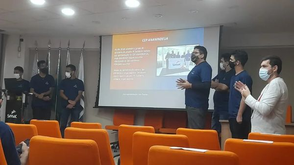
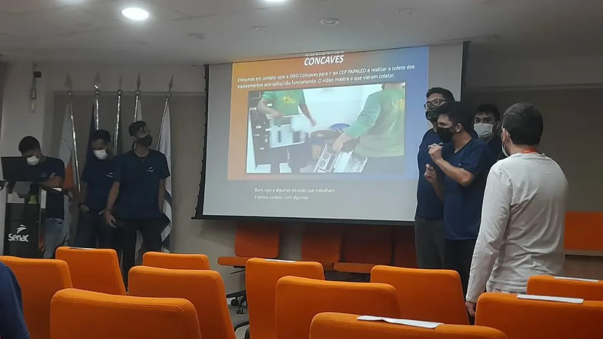
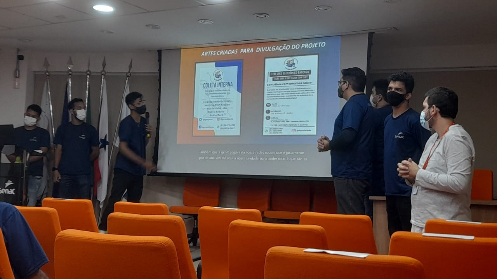
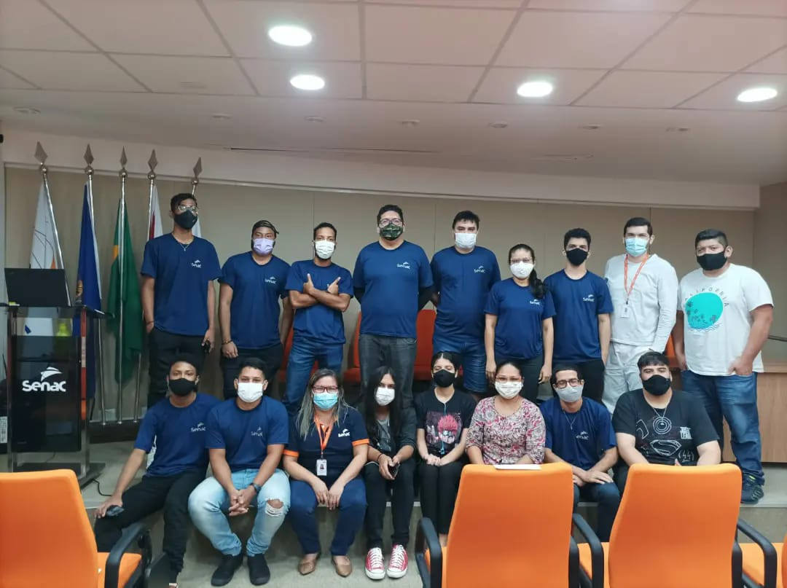

21 de fevereiro, 2022
arrow_back Voltar para Notícias
21 de fevereiro, 2022
arrow_back Voltar para Notícias
Alunos detalham o passo a passo para doações, triagem de materiais e entrega para instituições
No dia 21 de fevereiro, alunos do Projeto PC Solidário fizeram uma apresentação detalhada de todos os estágios do processo de doação.

O projeto PC Solidário tem revolucionado a forma como equipamentos eletrônicos são reaproveitados e doados para instituições carentes. Durante a apresentação, os alunos detalharam cada etapa do processo, desde a coleta dos materiais até a entrega final.
O processo começa com a triagem cuidadosa de todos os equipamentos recebidos. "Cada peça é testada e avaliada individualmente", explicou um dos alunos. "Nosso objetivo é garantir que tudo o que for doado esteja em perfeitas condições de uso."



Além da parte técnica, os alunos também destacaram a importância social do projeto. "Muitas pessoas não têm acesso a equipamentos básicos para estudos e trabalho. Estamos ajudando a mudar essa realidade", comentou uma das participantes.
Até o momento, o projeto já doou mais de 1.000 computadores e beneficiou diretamente 50 alunos através de suas ações de capacitação.